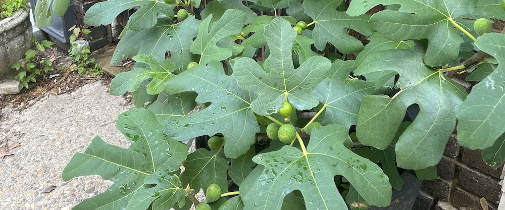
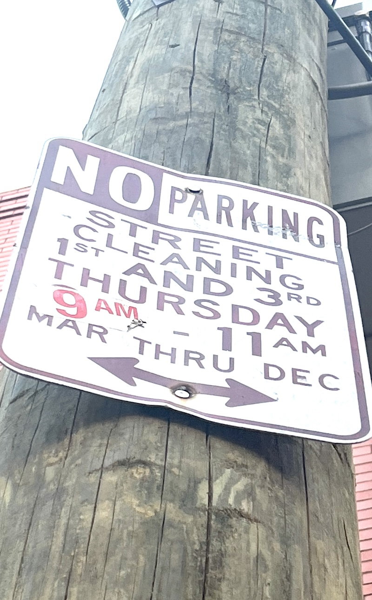
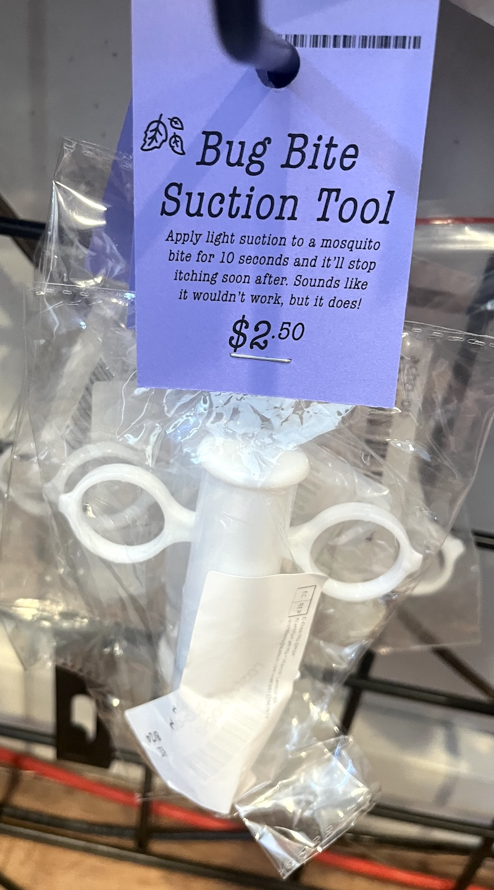
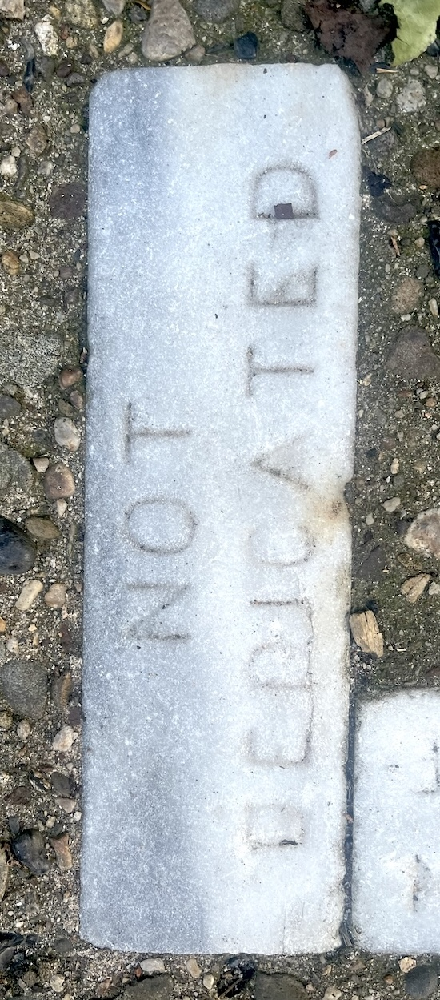
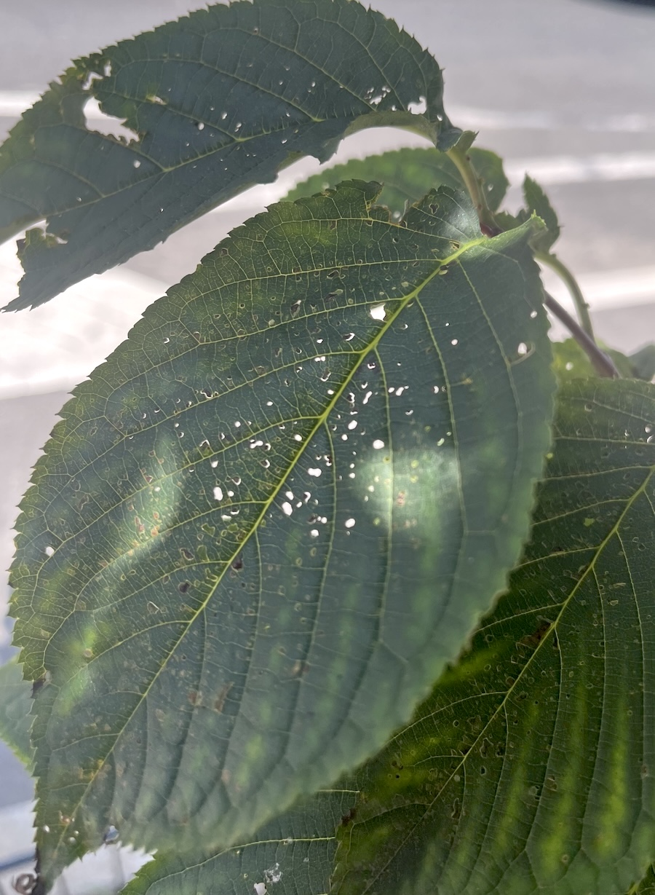
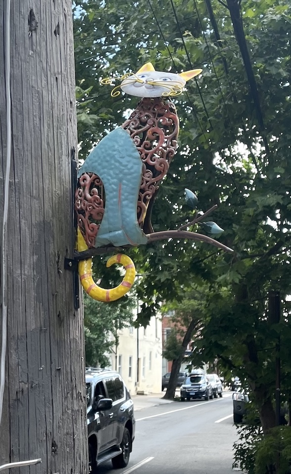
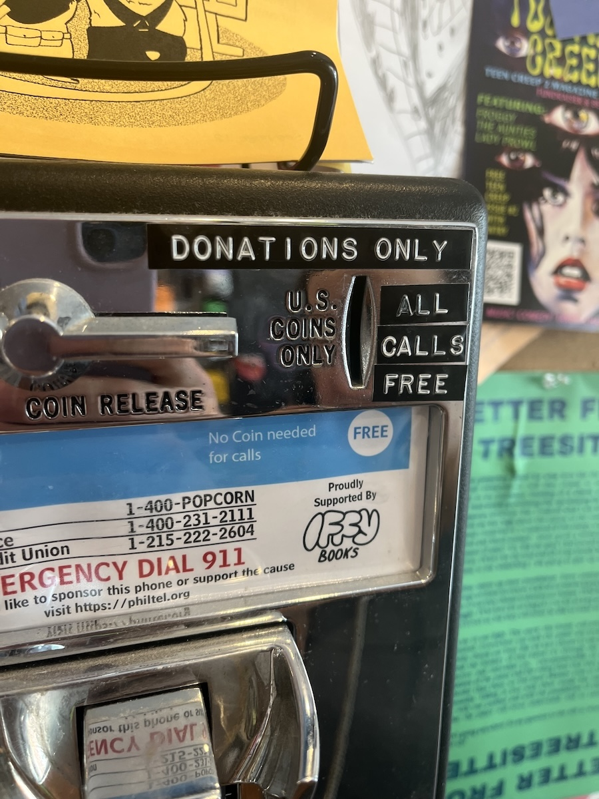
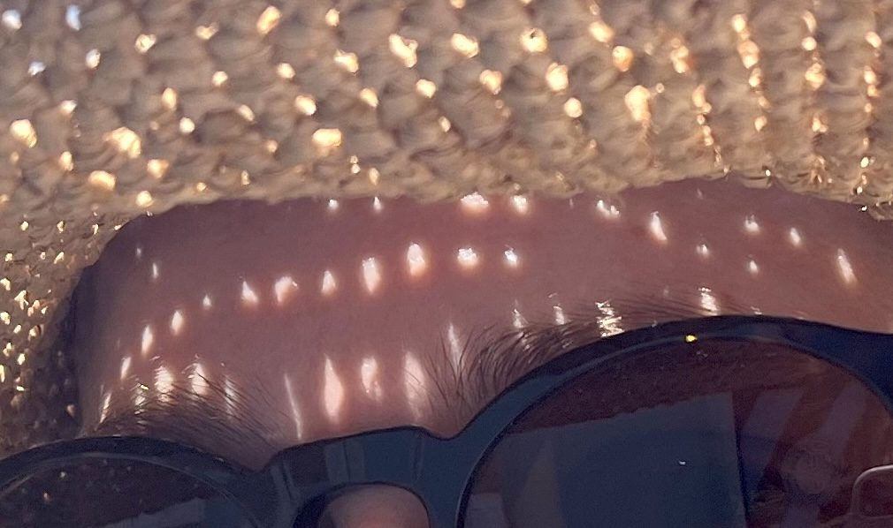
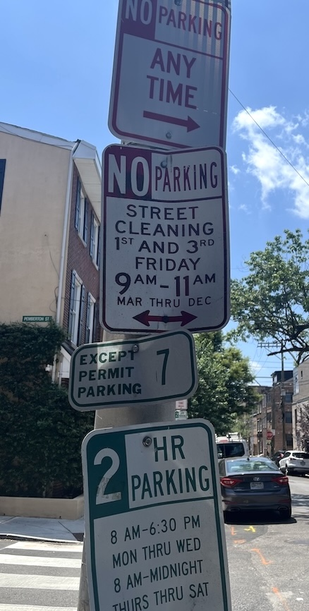

Table of Contents
- 35.It is funny that most ficus make a fig you should not eat...
- 34.
 This flower has small flowers...
This flower has small flowers...
- 33.Do you ever look at a sign on a pole...
- 32.
 The cackling sun melts the sky...
The cackling sun melts the sky...
- 31.Light suction to mosquito bite...
- 30.Can something be dedicated not dedicated...
- 29.
 Pink petaled prickly purpurea...
Pink petaled prickly purpurea...
- 28.Atomized aromatics animatedly arise all a-twitter...
- 27.After the park...
- 26.
 In a window...
In a window...
- 25.At a corner on my walk...
- 24.
 Pareidolia, in this place...
Pareidolia, in this place...
- 23.Hidden microscopic bugs...
- 22.Metal cat, metal cat...
- 21.
 Near South and Broad there is a wall...
Near South and Broad there is a wall...
- 20.Come learn about economics...
- 19.Sun-sprinkled scintillant speckles strewn astride a shining grin...
- 18.
 My cat's a little dummy...
My cat's a little dummy...
- 17.
 A park to the north is just one tree and shrubs...
A park to the north is just one tree and shrubs...
- 16.
 A lodge for the cat who's alone on the street...
A lodge for the cat who's alone on the street...
- 15.On first week and third, Friday from 9AM...
- 14.
 Please fly here post haste with your hydrate applier...
Please fly here post haste with your hydrate applier...
- 13.
 A sign in my gym all the way at the back...
A sign in my gym all the way at the back...
- 12.
 Ikea wardrobe, pulled apart...
Ikea wardrobe, pulled apart...
- 11.
 I don't know Brandy Melville...
I don't know Brandy Melville...
- 10.
 Happy Birthday, so they say...
Happy Birthday, so they say...
- 9.9. A farmer works for years in the fields...
- 8.Three coins catch the corner of my eye...
- 7.I found a dirty dollar on the ground...
- 6.Summer fling with a beautiful woman--...
- 5.It's weird, you know, to feel so close...
- 4.Plant a pickle, grow a pickle, take a pickle, owe a pickle...
- 3.Two monkeys dance a wild tango...
- 2.I sit here eating a burrito...
- 1.As I queue here at the bank...